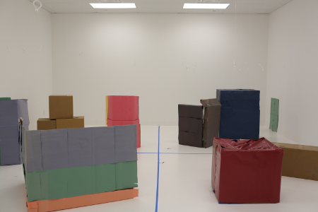
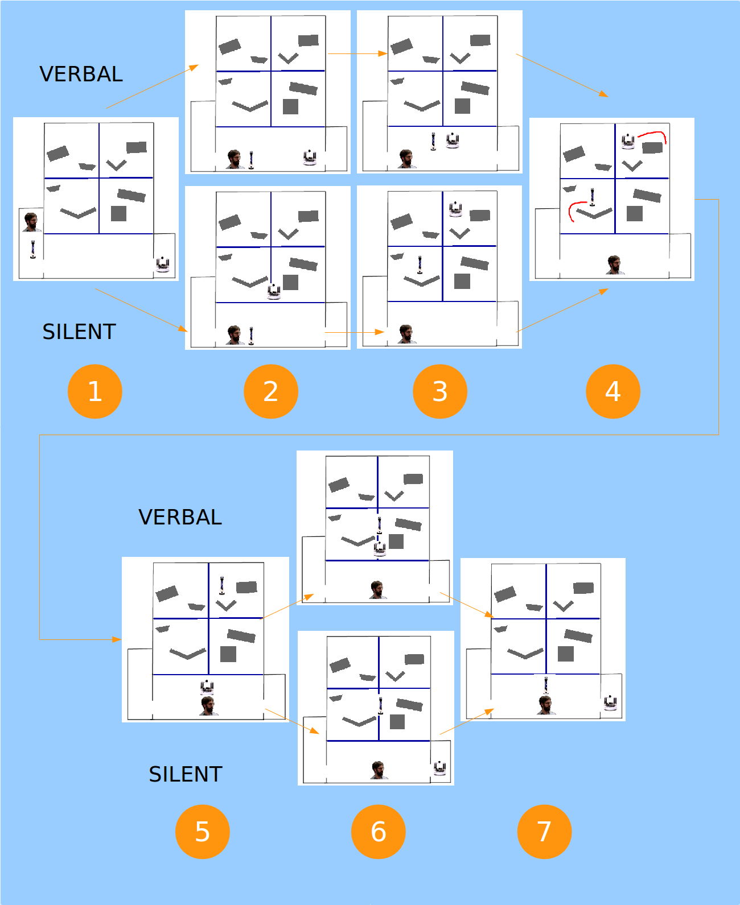
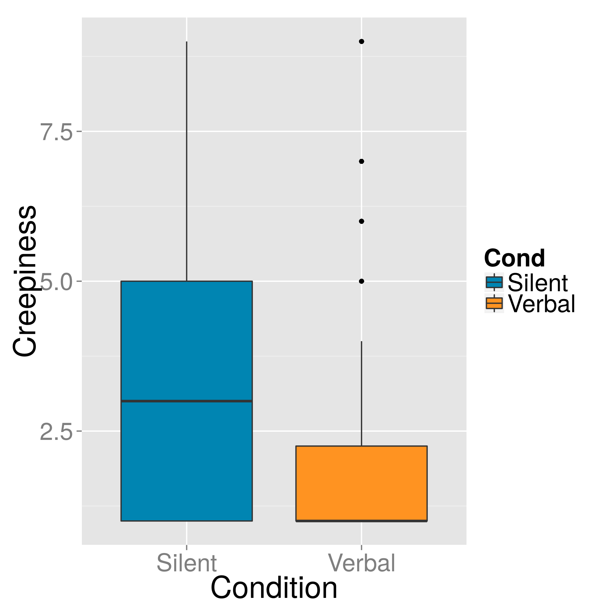

Imagine a future in which your house is full of robots to help you with daily tasks; cleaning, yardwork, cooking, etcetera. You come home after a long day, and plop down on the couch. Normally when this happens, your cooking and bartender robots (Waiterbot and Bottender) stop by to ask if they can get you anything. Tonight, only your cooking robot stops in.
“Where’s Bottender?” you ask.
“Bottender is plugged in in the kitchen, but should be finished charging soon,” says Waiterbot.
“Can you tell Bottender I want an Old Rasputin Imperial Stout?” you ask, being far too lazy to go down to your beer cellar and get one yourself.
“Certainly,” says Waiterbot, “Would you like anything to eat?”
“Sure”, you say, “How about some Pad Thai.”
Waiterbot agrees, and drives out of the room. As it’s leaving the room, Bottender drives in through another doorway with a bottle of Old Rasputin.
You gratefully take the glass from Bottender, then raise an eyebrow and ask,
“How did you know I wanted an Old Rasputin?”
“Waiterbot told me,” replies Bottender.
One of the goals of the field of Human-Robot Interaction is to make human-robot interaction as natural as possible. In part, this means making humans feel comfortable, and not, say, creeped out. For example, the theory of the “Uncanny Valley”, which suggests that humans are creeped out by robots (or other agents) that look very close to human but are slightly “off” provides us with design suggestions for building less creepy robots.

One of my tertiary research interests involves whether there is an “uncanny valley of actions”, that is, are there certain robot behaviors that may be useful to the robot, but should be avoided because they creep people out. One possible action in the uncanny valley of actions is robot telepathy. As seen in the situation above, robots don’t need to communicate with each other verbally, and instead can simply communicate over WiFi.
On the one hand, there’s nothing particularly insidious about this. For one thing, it’s pretty similar to humans just texting each other. Furthermore, it’s obviously much more efficient than driving up to each other and communicating through speech. On the other hand, telepathy is regarded as a “supernatural” ability which would be eerie if performed by humans, and thus it might not be unreasonable to expect that in certain situations it might seem eerie when performed by robots.
In a set of experiments, we decided to investigate whether people would indeed be creeped out by “robot telepathy”. We put people in a situation very much like the scenario described above, except that participants were giving the robots instructions for how to explore a disaster zone. Participants were told to assign different tasks to the two robots (looking for wounded people and looking for radiation), and to give the robots different routes to explore the environment. However, like in the scenario described above, only one robot greeted them, and told them that it would be able to pass their instructions on to the other robot, which was still charging. After giving instructions to the robots, participants entered our simulated disaster zone (a big white room filled with obstacles, with a designated “safe zone” they were told to remain in).

In one condition, when participants entered the room, they observed the two robots drive up to each other, and verbally relay the participant’s instructions from one robot to the other. In the second condition, when participants entered the room the robot that had been charging was already carrying out the task that the participants had instructed the other robot to relay to it.
After the experiment, we gave participants surveys in which they were asked to assess the robots on a wide variety of scales, including how creepy or unsettling they believed the robots’ behavior to be.

What were our results? Well, as I said before, we actually ran a “set” of experiments. These experiments only differed with regards to what kind of robot interacted with them originally, and what kind of robot played the role of the “charging robot”; the second experiment merely flipped these roles.
After the first experiment, we did not find a significant difference in perceived creepiness between the two conditions, as reported in our 2014 RO-MAN paper. However, when analyzing the combined data from both experiments, we found that people found the robots to be significantly more creepy or unsettling in the “covert” (i.e., telepathic) condition than in the “verbal” condition. The results of this full analysis is due to be published in the Journal of Human-Robot Interaction in their next issue, a preprint of which can be found here.

Now, as I’ve mentioned, this finding won’t apply in all cases. As we discuss in the JHRI article, there are a wide variety of considerations which might make robot telepathy more or less acceptable.
-
It might be very annoying or inefficient for robots to communicate certain information verbally: information that the human doesn’t care about, is hard to communicate “naturally”, needs to be communicated at high frequency, or for which robots would need to travel more than a trivial distance in order to communicate.
-
It might not be secure for robots to communicate some information verbally. If there are other people or robots listening in, there may be security or privacy risks associated with robots simply blurting things out to each other for everyone to hear.
-
If a tree falls in a forest, and there’s no one there to hear it, does it make a sound? That is, if two robots need to communicate and there are no humans listening in, does it matter if they communicate verbally? Probably not.
With these issues in mind, we concluded that it may be preferable for robots to communicate information verbally (simultaneous to more efficient nonverbal communication over wifi) purely for human benefit when (1) it’s important for humans to know that the information was communicated correctly and successfully, (2) when the transmission is going to be short, infrequent, and easy to communicate, and when (3) the only non-robot agents nearby are cooperative human agents (for which there are no security or privacy risks).
This was a pretty fun research topic to investigate. Hopefully in the future I’ll be able to do more research on the uncanny valley of actions… in addition to my other research of course. Someday. When I have more time. And a grant to investigate other aspects. Right now? I could really go for a…
Wow, thanks Bottender! This is just what I wanted! Hey wait a minute…